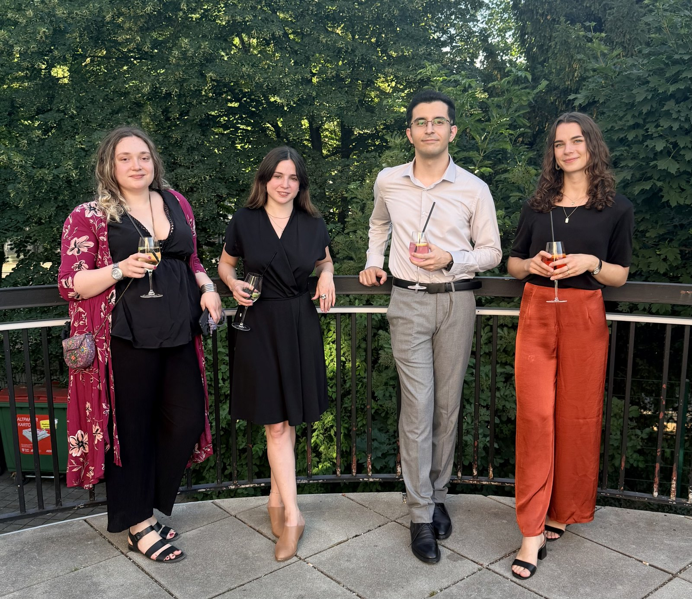

Research at RIIC
One of the most exciting opportunities unlocked by deep learning is the ability to compress complex, high-dimensional information into digestible concepts that humans can engage with directly. This is especially valuable in intensive care and anesthesia, where clinicians must make rapid, high-stakes decisions while navigating a constant stream of vital signs, laboratory trends, imaging, medications, and procedural context.
At RIIC, we aim to build and evaluate representational embeddings that distill this richness into clinically meaningful structures. By closely examining the latent spaces of deep learning models, we can detect subtle shifts in data distributions, retrieve similar cases from the past, and train models that adapt to evolving clinical environments. In this fashion, we can build applications that are truly safe, useful, and impactful in clinical practice.
